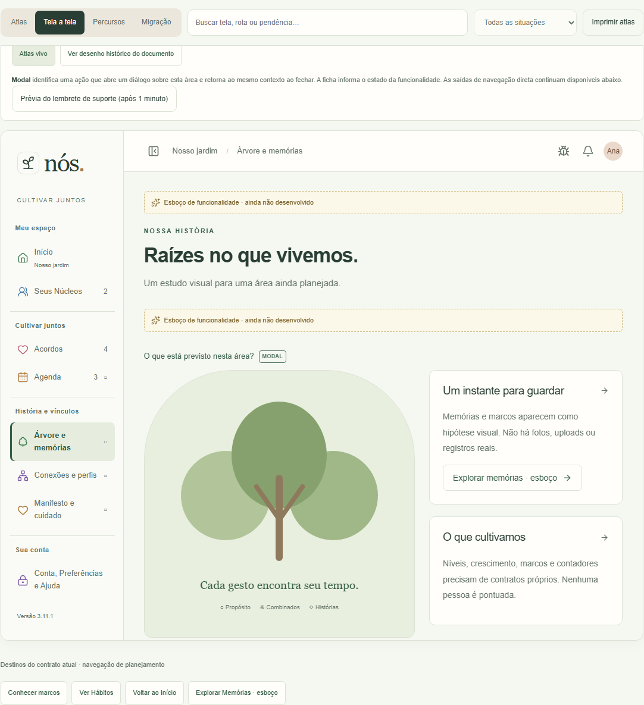
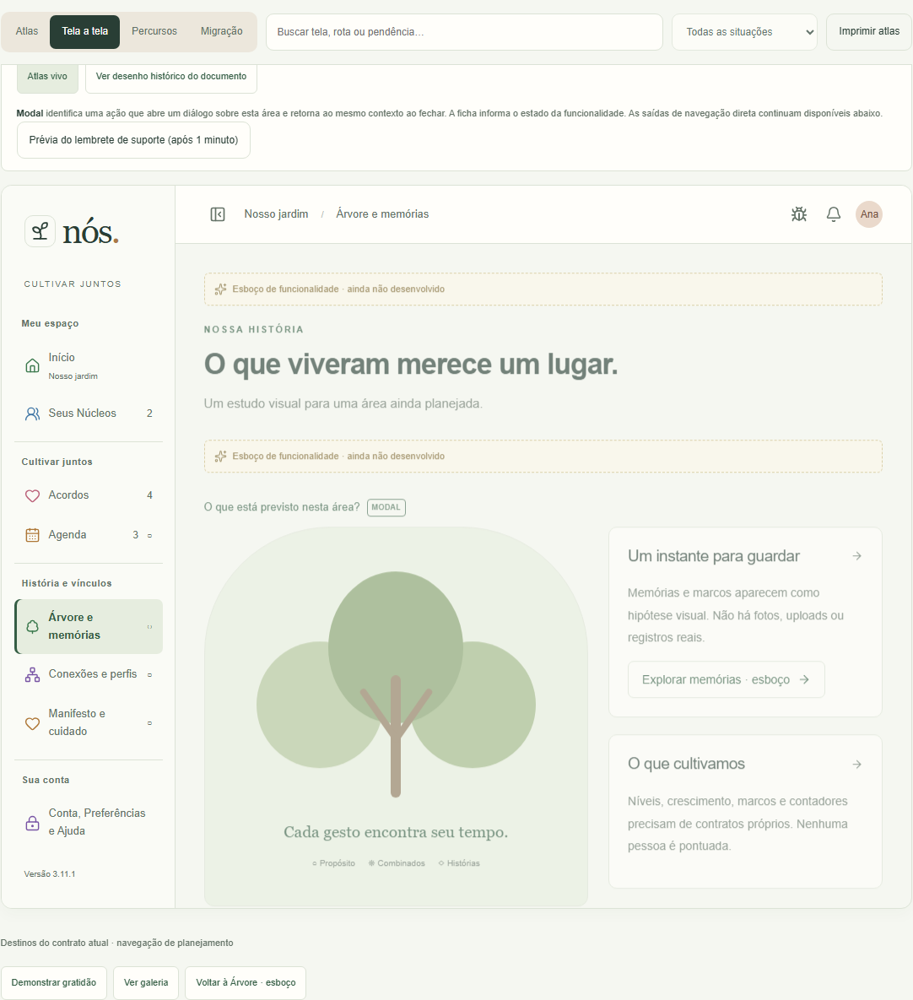
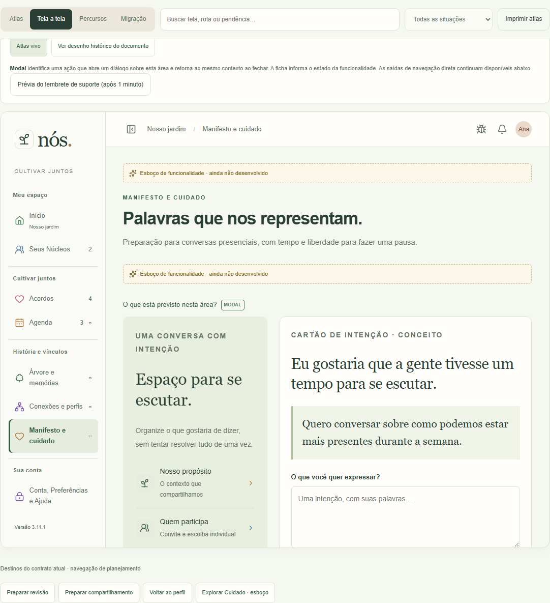
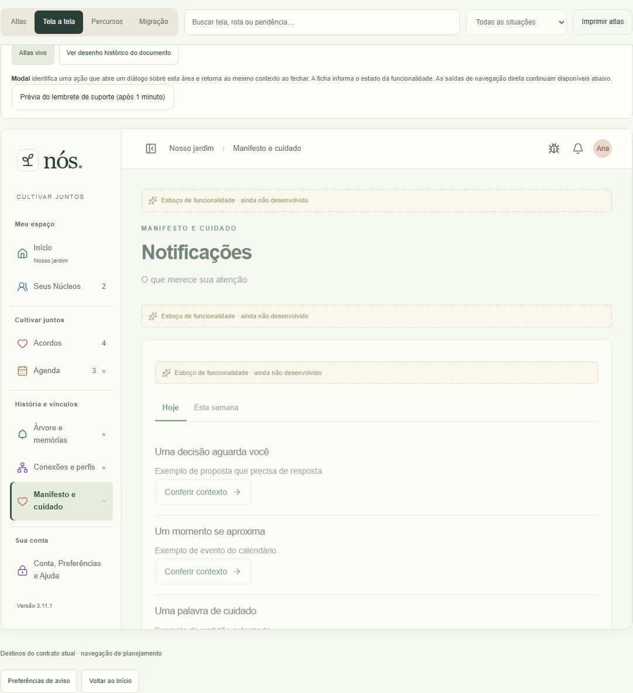

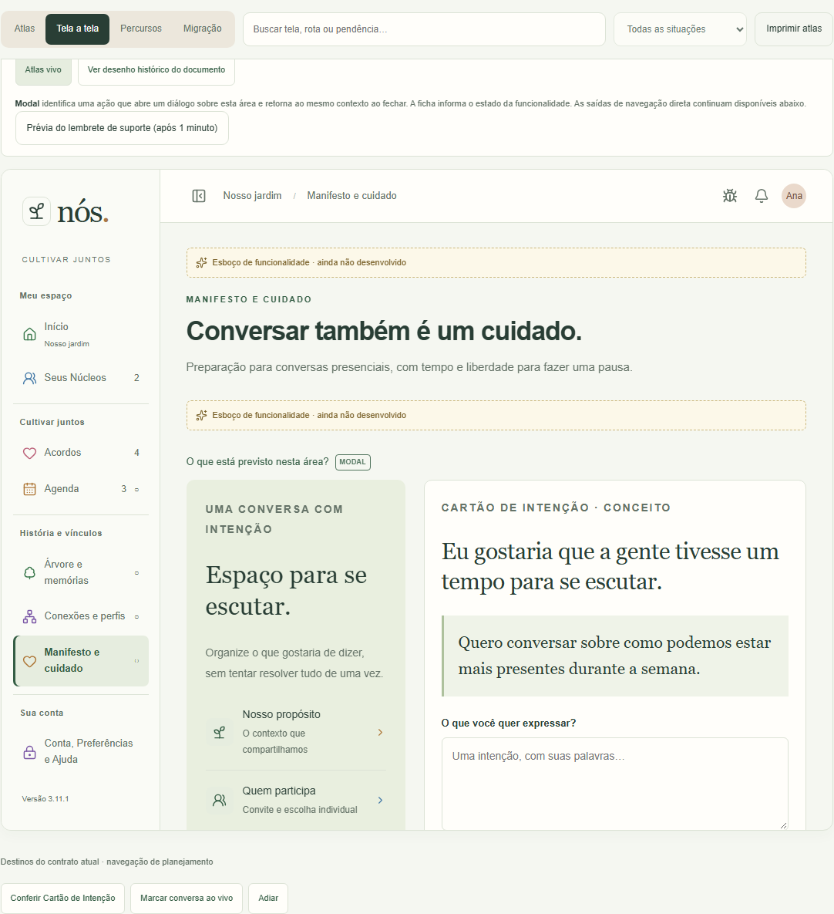
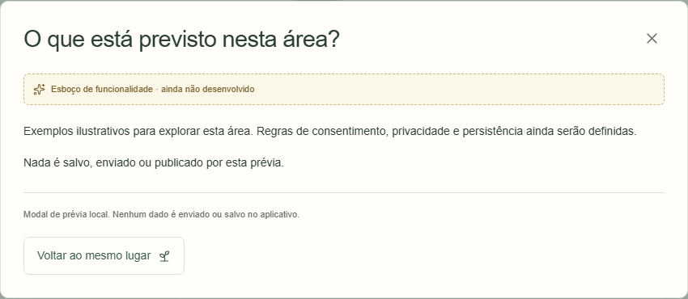
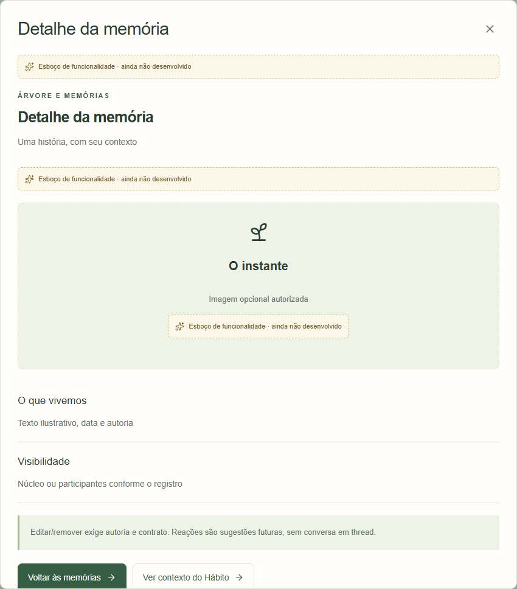
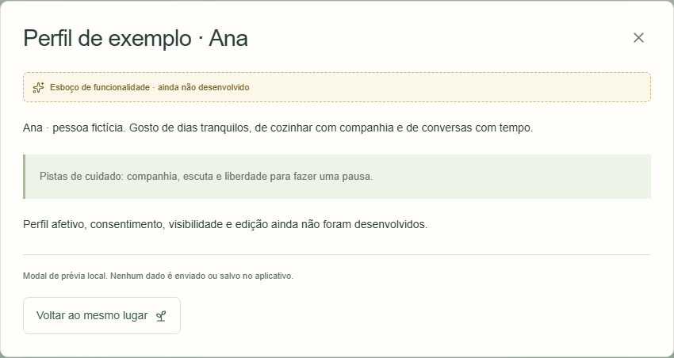
Prévia v4.0.0-alpha.9 em validação. Capturas em Chromium com dados ilustrativos. As composições existentes preservam o desenho das áreas planejadas. As fichas e o roteiro registram o recorte Angular.
As imagens mostram o Atlas. A comparação no aplicativo Angular depende da validação integrada.








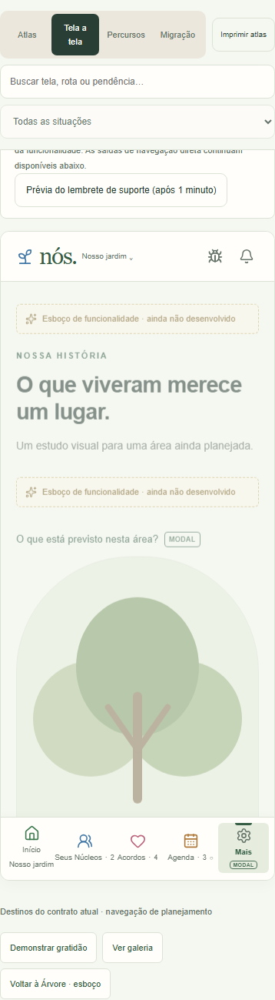

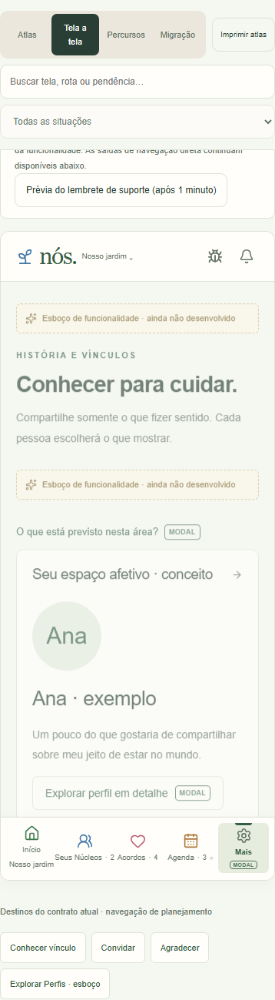
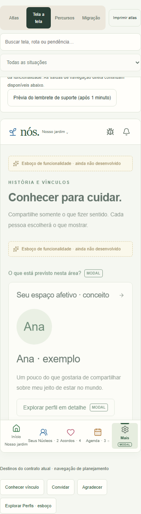

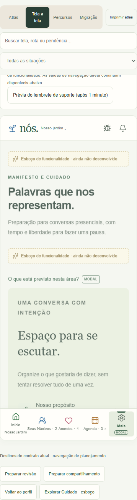

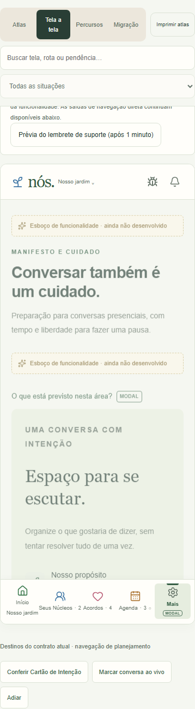
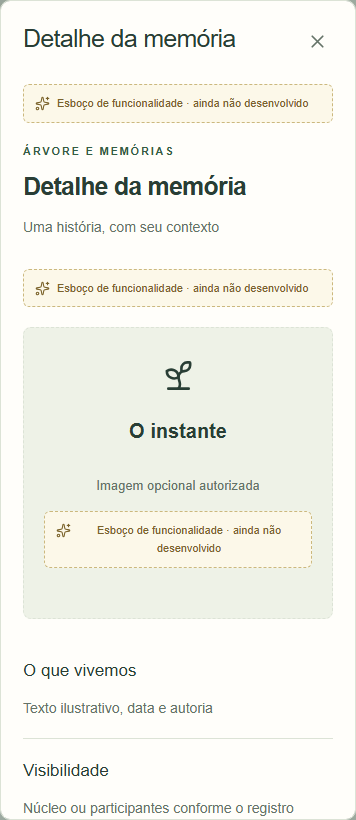
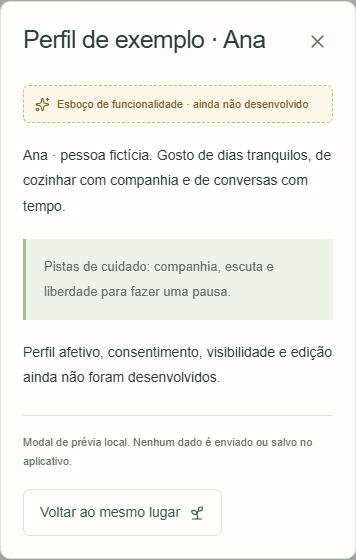